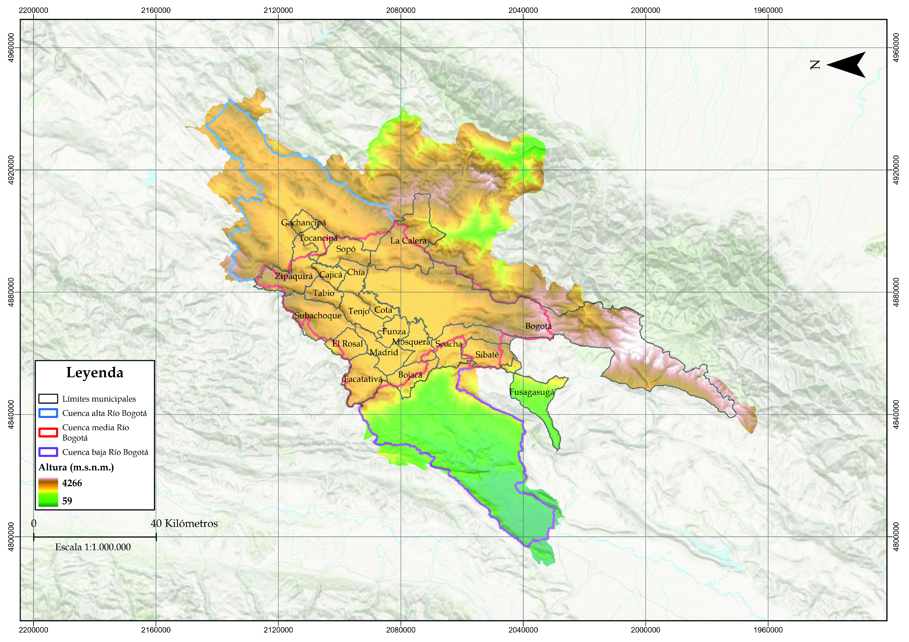
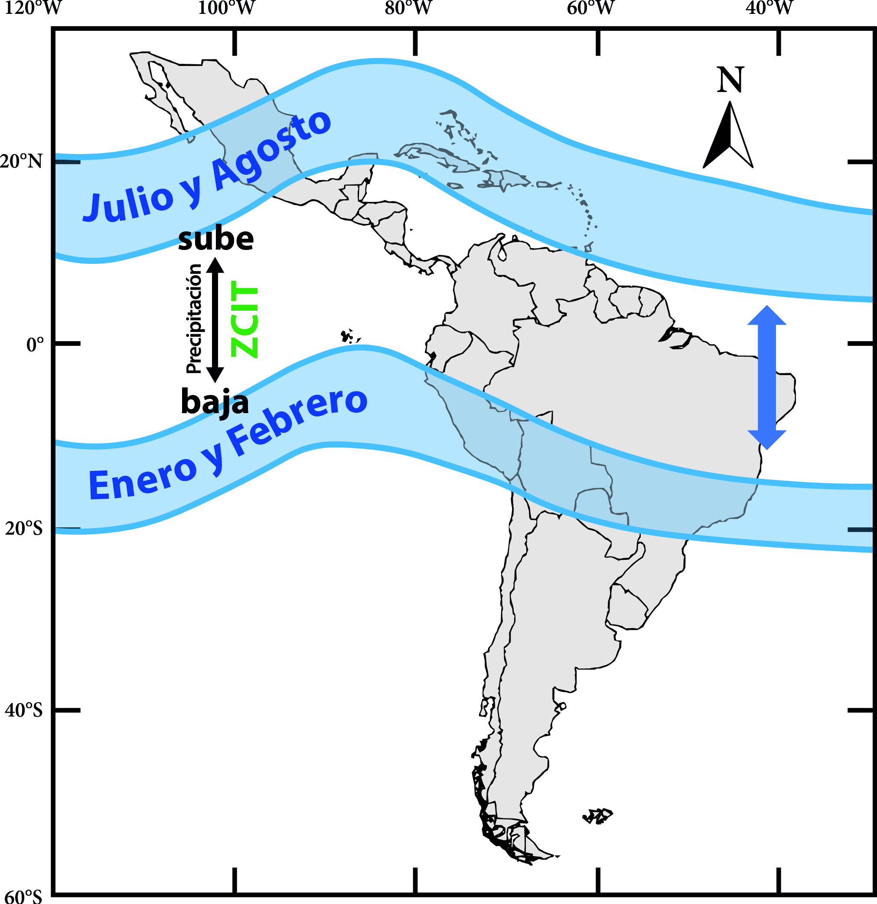
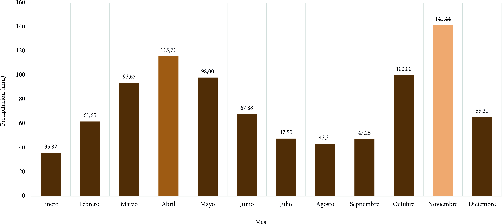
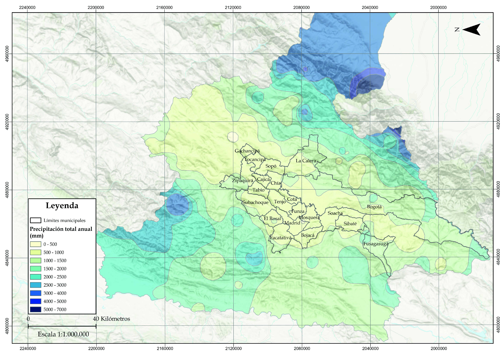
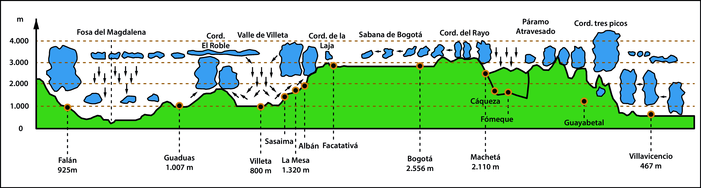
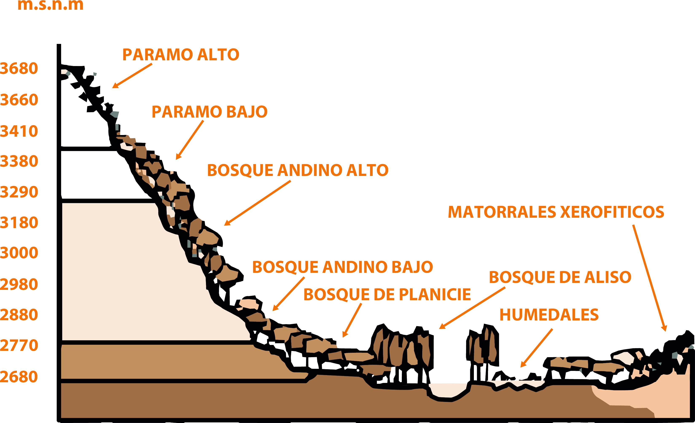
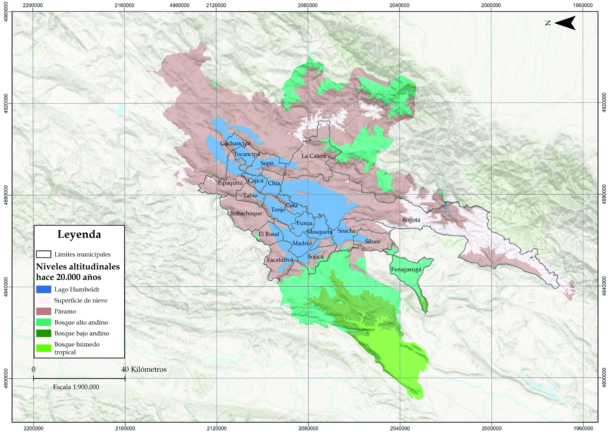
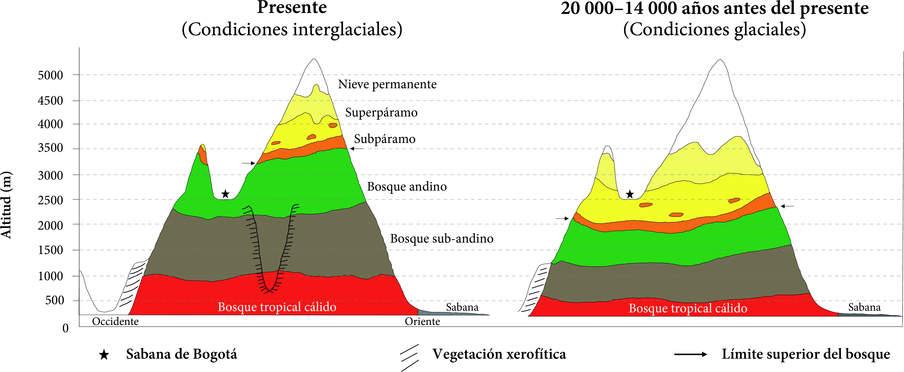

1.1. Contexto geográfico de Bogotá
Para la construcción de civilidad entre humanos y con la naturaleza, se deben poseer bases en el entendimiento de la geografía como ciencia natural y como ciencia social y, de los conceptos y las herramientas de SIG que la modernidad dispone para su análisis y trabajo. Los objetivos de la Unidad son identificar, reconocer y analizar las determinantes e interrelaciones que impone las características y dinámicas del territorio “ecológico1 ”.
La cuenca del río Bogotá —que contiene a Bogotá y su región, en donde se encuentra el Distrito Capital de Bogotá en sus dimensiones urbana y rural— está en la cordillera Oriental de Colombia situada en el extremo norte de los Andes del continente americano, a 4° al norte de la línea del ecuador y 74° oeste del meridiano de Greenwich aproximadamente, lo que la sitúa en la zona ecuatorial del globo terráqueo. Esto implica que en Bogotá, y en Colombia en general no hay estaciones definidas por el movimiento anual de la tierra alrededor del sol como en el sentido en que las estaciones se conciben en los hemisferios norte y sur del planeta Tierra. Bogotá y su región —la cuenca media y alta del río Bogotá—, es una planicie de 417 296 ha de extensión que hace parte del llamado altiplano Cundiboyacense. Posee un medio ecológico de bosque andino y páramo con alta presencia de agua, representada por su humedad y en reductos del lago que alcanzó su mayor extensión hace 30 000 años: una extensa red de valles erosivos, humedales, encharcamientos por alto nivel freático e inundaciones periódicas.
Las cuencas alta y media del río Bogotá están a una altura entre los 2545 metros y los 3953 metros —un desnivel altitudinal de 1408 metros— y que se traduce en pendientes poco pronunciadas en la mayor parte de su extensión. Aguas abajo, la cuenca baja del río Bogotá que mide 171 458 ha de extensión, menos de la mitad de la cuenca alta y media, tiene un desnivel altitudinal mucho mayor, de 2486 metros, lo cual se traduce en pendientes mucho más pronunciadas después del Salto del Tequendama. Esta comparación explica el concepto de Sabana de Bogotá_,_ unas tierras planas en lo alto de las montañas de los Andes que conserva una temperatura y una dinámica hidrometereológica con un régimen de variaciones más o menos constantes a lo largo del año por estar localizada en la franja ecuatorial del planeta2 .
Mapa 1. Territorio político-administrativo del área de Bogotá y la región del área de estudio de la SMOB, elevación de la cuenca del río Bogotá y la región hídrica de Guhl

Fuente: Elaboración Sociedad de Mejoras y Ornato de Bogotá con datos de EOSDA Landviewer y CAR 3.Su posición ecuatorial también la sitúa en la llamada Zona de Convergencia Intertropical-ZCIT, que es una zona de baja presión y alta temperatura que va variando, dependiendo de la zona del globo terráqueo que reciba mayor radiación solar a lo largo del año, y que genera una gran nubosidad y precipitaciones por el encuentro de los vientos alisios del hemisferio norte y sur. Debido a este fenómeno atmosférico de movimiento de la ZCIT entre los hemisferios norte y sur, y según los datos hidrológicos históricos, la Sabana presenta una distribución de lluvias bimodal a lo largo del año, con picos de precipitación en los meses de marzo-abril y octubre-noviembre. El clima y el tiempo están en permanente transformación, característica que recibe el nombre de “variabilidad climática”, pero mientras el primero cambia en periodos muy largos, el segundo lo hace en periodos relativamente cortos. En los países “tropicales” que se encuentran en la franja intertropical —entre el Trópico de Cáncer, al norte de la línea ecuatorial, y el Trópico de Capricornio, al sur—, solamente existen dos estaciones o temporadas: una caracterizada por la abundancia de lluvias y otra por la ausencia de estas. Bogotá se encuentra en una zona privilegiada en el mundo, ya que la región presenta importantes precipitaciones, incluso en las temporadas secas.
Imagen 1. Cambio de la zona de convergencia intertropical entre los meses de enero y julio

Fuente: Elaboración Sociedad de Mejoras y Ornato de Bogotá con base en Julián Augusto Reyna Moreno; Andrea Devis Morales; Jaime Ricardo Cantera Kintz; Efraín Ángel Cárdenas; Eusebio Cabrales Vernaza; José A. Lozano Iriarte; José Edgar Montealegre Bocanegra; Amparo Ramírez del Castillo; Olga Rojas; Zulma Pardo Rojas. El Océano. Maravilla terrestre (Bogotá: Editorial Comisión Colombiana del Océano, 2013).
Gráfico 1. Distribución de la precipitación en Bogotá, 2009-2025

Fuente: Elaboración Sociedad de Mejoras y Ornato de Bogotá con datos del Observatorio Ambiental de Bogotá.Mapa 2. Precipitación promedio anual en milímetros del territorio político-administrativo del área de estudio

Fuente: Elaboración Sociedad de Mejoras y Ornato de Bogotá con datos del IGAC, IDEAM–SINAP.También es importante reconocer el papel que juegan los llamados “ríos voladores” que provienen de la selva tropical amazónica. Más que “un pulmón” —que es una metáfora poco apropiada—, la selva se puede entender como un corazón que bombea el agua que se evapora del océano Atlántico y se precipita en la selva. Gran parte de esta agua se recircula en la misma selva, pero otro tanto se bombea hacia el sur y norte del continente suramericano. La mayoría de las nubes que se precipitan sobre el Distrito Capital y las cuencas que la abastecen de agua provienen de este mecanismo. Pero así mismo muchas de las actividades que contribuyen a la deforestación de la selva amazónica son resultado de las necesidades de las ciudades como Bogotá. Esto evidencia las interrelaciones positivas y negativas entre el ecosistema amazónico y la Sabana, las escalas local, regional y global.
También es innegable la influencia que tiene sobre Bogotá y su región el fenómeno del Niño y la Niña —ENOS: El Niño Oscilación Sur 4—, que se produce por el cambio de temperatura en el océano Pacífico, y que agudiza la variabilidad que generan años con excesos de agua e inundaciones, y otros con sequías muy intensas.
Es importante comprender que no solo la ubicación en el planeta Tierra es lo que hace a la Sabana de Bogotá única sino también su topografía que la sitúa en un valle conectada con otras altiplanicies de la cordillera oriental. Esto implica que la mayoría de las nubes conducidas por vientos ascendentes y periféricos a la Sabana provenientes de la Amazonía, los Llanos Orientales y el valle del Magdalena, se choquen con las montañas y tengan mayores precipitaciones que en la parte plana, con lo que el agua llega a la Sabana en forma de escorrentía, quebradas y ríos. Luego, por medio de un “efecto tetera”, la Sabana actúa como un espacio de calentamiento y recarga a la atmósfera de humedad al evaporar el agua que se encuentra en ella5 .
La porción de la cuenca media del río Bogotá antes del Salto del Tequendama, es una Sabana inundable, la cual ha estado sometida a un proceso constante de urbanización; esto explica por qué en épocas de lluvia se generan inundaciones en las localidades de Kennedy, Bosa, Fontibón y Suba, o municipios como Mosquera, Funza y Soacha. Debido a esto, los suelos de la Sabana Centro y Occidente, que limitan con el río Bogotá, tienen humedales _Ramsar6 y se ha reconocido el riesgo por inundaciones en esta zona.
Imagen 2. Perfil sinóptico a través de la cordillera Oriental

Fuente: Modificado de Weischet 1965 tomado de Ernesto Guhl Nannetti. La región hídrica de Bogotá (Bogotá: Revista de la Academia Colombiana de Ciencias Exactas, Físicas y Naturales, 2013).Sin los diques y embalses que se le han hecho a la cuenca a lo largo de su cauce natural, una época de lluvias en la ciudad generaría grandes inundaciones en los municipios aledaños al río Bogotá. Además, la accidentada topografía hace que haya muchas zonas con riesgo de movimientos en masa, avenidas torrenciales en eventos de fuertes lluvias y pendientes mayores al 25 %, donde no debería haber construcciones por el alto riesgo.
La topografía característica de la Sabana de Bogotá también ha tenido una influencia considerable en las formaciones vegetales que se desarrollan en distintos niveles altitudinales, por lo tanto, es posible encontrar múltiples ecosistemas que van desde los páramos o el bosque altoandino hasta matorrales xerofíticos7 y humedales.
Imagen 3. Formaciones vegetales por altitud de la cuenca alta del río Bogotá

Fuente: CAR – Thomas Van Der Hammen, 1999.1.2. Contexto geológico de Bogotá
Todo lo anterior se debe comprender en el marco geológico de la última glaciación 8finalizada hace aproximadamente 20 000 años atrás, cuando la temperatura global era mucho más baja comparada a la de hoy en día y los pisos térmicos estaban distribuidos en la cordillera a diferentes alturas a las que se ven hoy en día. En esa época, la Sabana poseía un gran lago, rodeado de grandes picos nevados, razón por la cual los suelos de la cuenca media y alta del río Bogotá, son tan planos y arcillosos 9. En el siguiente mapa se observa una reconstrucción del paisaje según los estudios citados de Thomas van der Hammen y Henry Hooghiemstra, donde hace 20 000 años atrás los ecosistemas estaban a alturas diferentes en las montañas a las que se encuentran hoy en día 10.
Mapa 3. Territorio político-administrativo del área de estudio, y los pisos térmicos de hace 20 000 años en la región hídrica de Guhl

Fuente: Elaboración Sociedad de Mejoras y Ornato de Bogotá con datos de EOSDA Landviewer, Van Der Hammen y Hooghiemstra.
Esto se sabe por el polen fósil encontrado en diferentes lagunas ancestrales naturales del territorio y la conformación geomorfológica de los suelos y las montañas. En lo que hoy en día son los páramos de Chingaza, Cruz Verde, Sumapaz y Guerrero, alguna vez hubo grandes superficies de nieve que al derretirse bajaban por las montañas y conformaron el gran lago que existió en lo que hoy llamamos la Sabana de Bogotá, que era un páramo enorme. Comprender la historia de este territorio desde su conformación orográfica, geológica y ecológica generan una mejor comprensión sobre las características físicas que se exploran más a detalle en esta Unidad.
Imagen 4. Cambio máximo de la cobertura vegetal en un ciclo glacial-interglacial del Pleistoceno

A la izquierda la distribución actual de las zonas de vegetación de los Andes, de acuerdo con la altitud. A la derecha, la reconstrucción tentativa de las zonas de distribución durante el último período glaciar según estudio de Van Der Hammen.Fuente: Modificado por la Sociedad de Mejoras y Ornato de Bogotá con base en Henry Hooghiemstra; Suzette G.A Flantua. Colombia in the Quaternary: An Overview of Environmental and Climactic Change (The Geology of Colombia. Volume 4. Chapter 2. Servicio Geológico Colombiano, 2019).
El análisis territorial requiere del conocimiento acerca de conceptos de las disciplinas que estudian el clima, el agua, el aire, las montañas, los suelos y los ecosistemas, así como las relaciones entre estas. Para interpretar adecuadamente las realidades y características físicas territoriales, y las limitaciones que estas determinan al humano, la sociedad y al desarrollo, se parte desde el contexto propio, pero teniendo en cuenta las perspectivas de otros actores no humanos del territorio. Así se desarrollan competencias para aportar a la cultura, el paisaje, el ordenamiento territorial, la gestión de riesgos de desastres y la civilidad.
1.3. Conocimiento científico del territorio
El conocimiento científico del territorio y los conceptos necesarios para entender las ciencias naturales —ecología, biología, química, física entre otras especialidades científicas— sirve para la toma de decisiones. Instituciones públicas como el Servicio Geológico Colombiano-SGC, el Instituto Geográfico Agustín Codazzi-IGAC, el Instituto de Hidrología, Meteorología y Estudios Ambientales-IDEAM, la Corporación Autónoma Regional de Cundinamarca-CAR, el Instituto Humboldt de Colombia, la Empresa de Acueducto y Alcantarillado de Bogotá-EAAB, las secretarías locales y regionales, entre otras; además de las privadas, la sociedad civil, la academia, las firmas de ingeniería, las empresas, entre otras, generan información sobre las características y fenómenos físicos para que se tomen las mejores decisiones sobre la ocupación, aprovechamiento, conservación y restauración del territorio.
El uso de publicaciones de las instituciones mencionadas anteriormente, los resultados de la aplicación de políticas públicas, y el análisis de datos e indicadores de las disciplinas científicas en la región ayudan a comprender la conformación pasada, actual y futura del territorio. Todo lo anterior, para ser críticos e incidentes frente a la clasificación de suelo vigente y la formulación tanto de los Planes de Ordenamiento Territorial-POT, como de Desarrollo Distrital y Local.
1.4. Escalas espaciales y temporales de las características y fenómenos del territorio
La comprensión de las diferentes escalas espaciales y temporales de los fenómenos y variables biofísicas, estudiadas por las disciplinas de la geografía que brindan resiliencia a los ecosistemas naturales y explican el estado actual del territorio, permiten un análisis sistémico y complejo del mismo. Una región puede ser influenciada por factores aparentemente externos como el clima, el agua, la migración de animales, entre otros; y temporales, considerando que fenómenos como los movimientos geológicos evidenciados en riesgos geográficos o terremotos, la evolución de los seres vivos, la formación del suelo, el cambio climático o la recarga de acuíferos se dan en escalas de tiempo diferentes a la de la vida humana y los impactos ambientales que esta genera.
Por ejemplo, la seguridad hídrica del territorio que está, además relacionada con la calidad ambiental de la selva amazónica que evapotranspira el agua generando ríos voladores en forma de humedad atmosférica, sirve para reflexionar sobre la necesidad de hacer un análisis sistémico y riguroso para cada uno de los factores, aparentemente externos, influyentes en la sostenibilidad territorial de la región.
Los procesos geofísicos dominan el territorio a escalas mayores a decenas de kilómetros; a escalas menores, la interacción de procesos y componentes bióticos y abióticos controlan la estructura, funcionalidad y variabilidad del paisaje. Estas escalas, a su vez interactúan entre ellas. Las ciencias han traído los mayores avances al humano, explicar lo invisible a escala humana con tecnologías y los datos que producen, también ayuda al ejercicio de construir civilidad entre nosotros y con la naturaleza. Las variables de la naturaleza estudiadas por las ciencias naturales y que se traducen en las características físicas del territorio son:
Variables físicas.
· Geomorfología.
· Modelación geológica de Cundinamarca.
· Zonas de explotación minera y compatibles con la minería.
· Suelos disponibles para intervenir.
· Pisos térmicos de la región hídrica de Guhl.
Variables agroecológicas:
· Áreas protegidas y zonas importantes para la conservación.
· Zonas de vida Holridge de Cundinamarca.
· Clasificación agrícola del suelo de Cundinamarca.
Variables hidro-climáticas y gestión del riesgo.
· Zonificación de riesgos por desastres naturales.
· Riesgo por Cambio Climático.
· Humedad o tierras secas en Cundinamarca.
· Temperatura promedio anual en Cundinamarca.
· Precipitación promedio anual en Cundinamarca.
· Cuerpos hídricos lénticos, lóticos y embalses.
· Zonas de recarga de acuíferos.
Sección 4.1.3 Las relaciones y determinantes ambientales del territorio Sección 4.2.1 El paisaje de Bogotá Sección 4.2.2 Conflictos socioecológicos y justicia ambiental Sección 4.2.3 La sostenibilidad territorial en Bogotá Sección 4.3.2 La Región hídrica de Bogotá y su Estructura Ecológica Principal Sección 4.3.3 Evolución de la ocupación del territorio Sección 5.1.2 Sistema de Servicios Públicos Sección 5.2.2 Sistema de hábitat
Footnotes
-
Ecología. Eco del griego “Oikos” que significa casa u hogar, y “logía” que se traduce como estudio o ciencia. ↩
-
Ver mapa 1. ↩
-
Para la exploración interactiva de la ubicación geográfica ingresar a DATACIVILIDAD. ↩
-
Gustavo Wilches-Chaux. ¿QU-ENOS PASA? Guía de la red para la gestión radical de riesgos asociados con el fenómeno ENOS (Bogotá: ARFO Editores e Impresores Ltda., 2007), 37. ↩
-
Ernesto Guhl Nannetti. La región hídrica de Bogotá (Bogotá: Revista de la Academia Colombiana de Ciencias Exactas, Físicas y Naturales, 2013), 334—335. ↩
-
Ramsar se refiere al tratado ambiental internacional conocido como la Convención sobre los Humedales, adoptado en 1971 en la ciudad iraní de Ramsar. Un sitio Ramsar es un humedal declarado de importancia internacional por su valor ecológico, biológico y para la conservación de la biodiversidad global. ↩
-
La xerofitia en la Sabana de Bogotá corresponde a los ecosistemas y plantas adaptados a la escasez de agua, ubicados principalmente en enclaves secos del suroccidente de la región. ↩
-
Eventos climáticos que ocurren en ciclos de decenas o cientos de miles de años. Son las épocas en que los casquetes polares y glaciares se expanden, cubriendo grandes áreas de los continentes. Las temperaturas son significativamente más bajas que las actuales. ↩
-
Henry Hooghiemstra; Suzette G.A Flantua. _Colombia in the Quaternary: An Overview of Environmental and Climactic Change (_The Geology of Colombia. Volume 4. Chapter 2. Servicio Geológico Colombiano, 2019), 44-77. ↩
-
Thomas Van der Hammen. La Sabana de Bogotá y su lago en el Pleniglacial Medio (Bogotá: Instituto de Ciencias Naturales. Universidad Nacional de Colombia-JSTOR, 1986). ↩